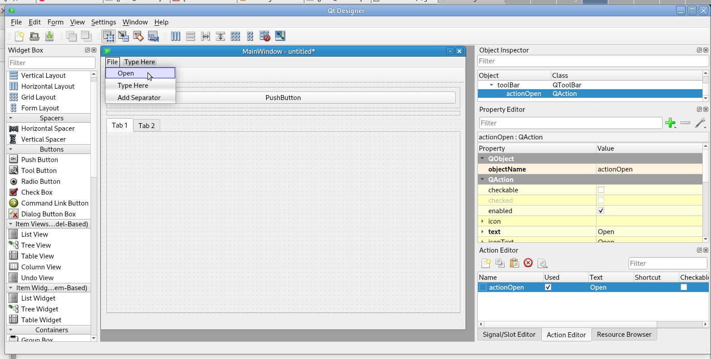
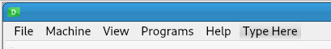
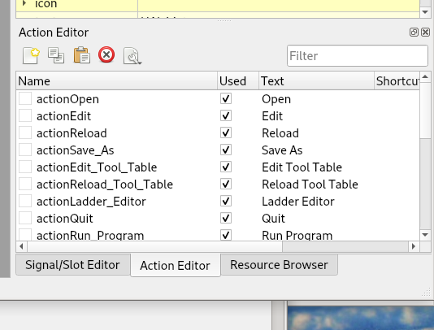
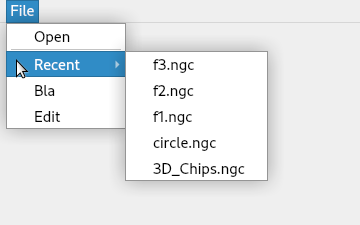
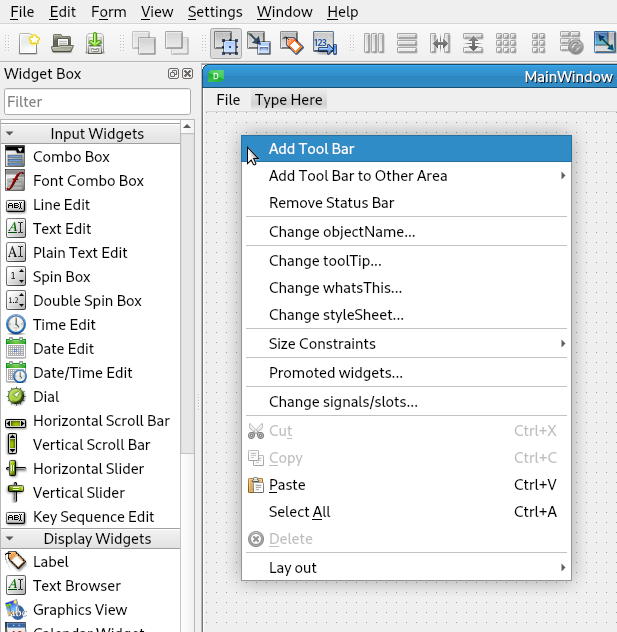
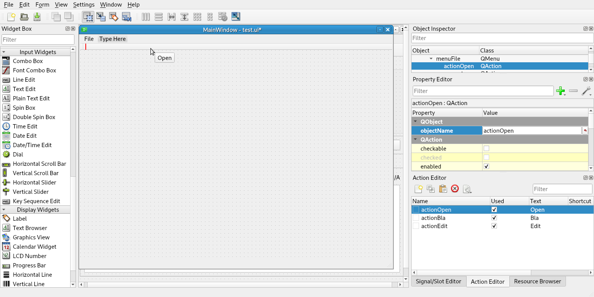
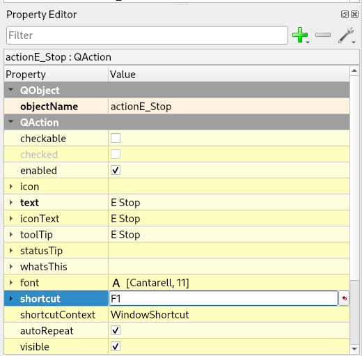

Menu¶
Adding Menu Items Tutorial Tool Bar Buttons Tutorial
Note
Every menu item has a command button, so you don’t need to use any menu items if you don’t want to.
Adding a menu item creates an action. When you create File > Open menu, the actionOpen action is created.
Warning
If you use the full-screen option, you will not be able to exit the application if you don’t have the Exit action or an Exit Push Button or Press ALT-F4 to close the GUI.
This shows the typical menu categories which are the first items in each menu. The image is from the Qt Designer.
The following table shows the menu name you type into Qt Designer and the action name that is created by the Qt Designer. Menu categories like File don’t create an action name.
File |
Action Name |
Open |
actionOpen |
Edit |
actionEdit |
Reload |
actionReload |
Save As |
actionSave_As |
Edit Tool Table |
actionEdit_Tool_Table |
Reload Tool Table |
actionReload_Tool_Table |
Ladder Editor |
actionLadder_Editor |
Quit |
actionQuit |
Machine |
Action Name |
E Stop |
actionE_Stop |
Power |
action_Power |
Run |
actionRun |
Run From Line |
actionRun_From_Line |
Step |
actionStep |
Pause |
actionPause |
Resume |
actionResume |
Stop |
actionStop |
Clear MDI History |
actionClear_MDI_History |
Copy MDI History |
actionCopy_MDI_History |
Homing |
this creates a home menu item for each axis |
Unhoming |
this creates a unhome menu item for each axis |
Clear Offsets |
this creates a clear offsets for each coordinate system |
Programs |
Action Name |
Show HAL |
actionShow_HAL |
HAL Meter |
actionHAL_Meter |
HAL Scope |
actionHAL_Scope |
View |
Action Name |
DRO |
actionDRO |
Limits |
actionLimits |
Extents Option |
actionExtents_Option |
Live Plot |
actionLive_Plot |
Velocity |
actionVelocity |
Metric Units |
actionMetric_Units |
Program |
actionProgram |
Rapids |
actionRapids |
Tool |
actionTool |
Lathe Radius |
actionLathe_Radius |
DTG |
actionDTG |
Offsets |
actionOffsets |
Overlay |
actionOverlay |
Clear Live Plot |
actionClear_Live_Plot |
Help |
Action Name |
About |
actionAbout |
Quick Reference |
actionQuick_Reference |
Action Names¶
When you add a menu item, it creates an action and the Object Name is created from the menu name automatically.
The Object Name must match the above items exactly in order to be discovered by Flex GUI:
Recent Files¶
Note
The Recent menu item is added after the Open menu. There must be at least one menu item after Open for the Recent menu to be added.
Location of the Recent menu after the Open menu:
Tool Bars¶
If you right-click on the main window, you can add a Tool Bar:
To add actions to the Tool Bar, drag them from the Action Editor and drop them in the Tool Bar:
To set the style of a Tool Bar Button, use the action name and replace action with flex_ for example the actionQuit would be flex_Quit. See Tool Bar Buttons in the stylesheet examples.
Shortcut Keys¶
Shortcut keys can be added in the Property Editor by clicking in the shortcut Value box and pressing the key or key combination you want to use. You can change text, icon Text, or tool Tip also.
Note
A toolTip can be handy, however they might not work on touchscreens.